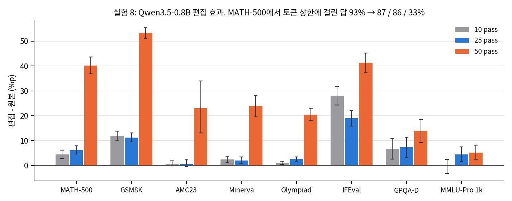
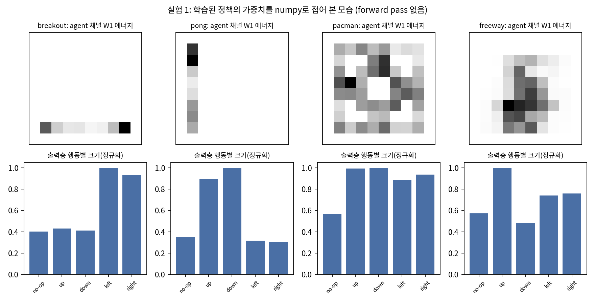
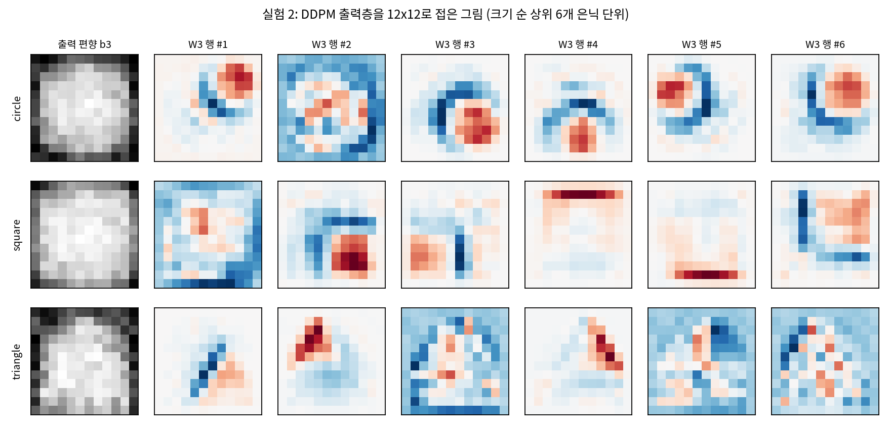
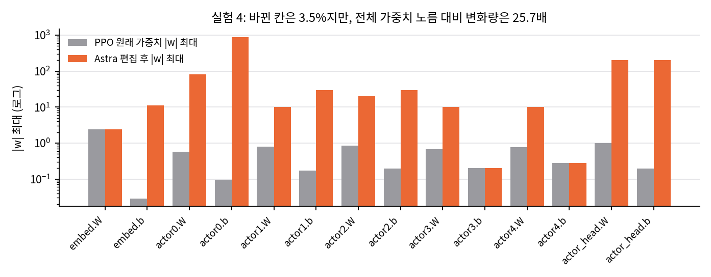
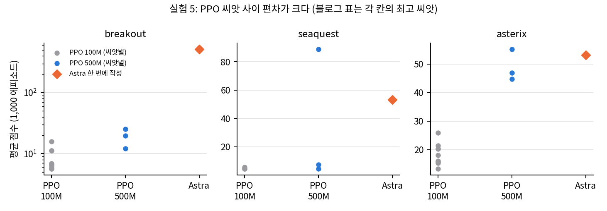
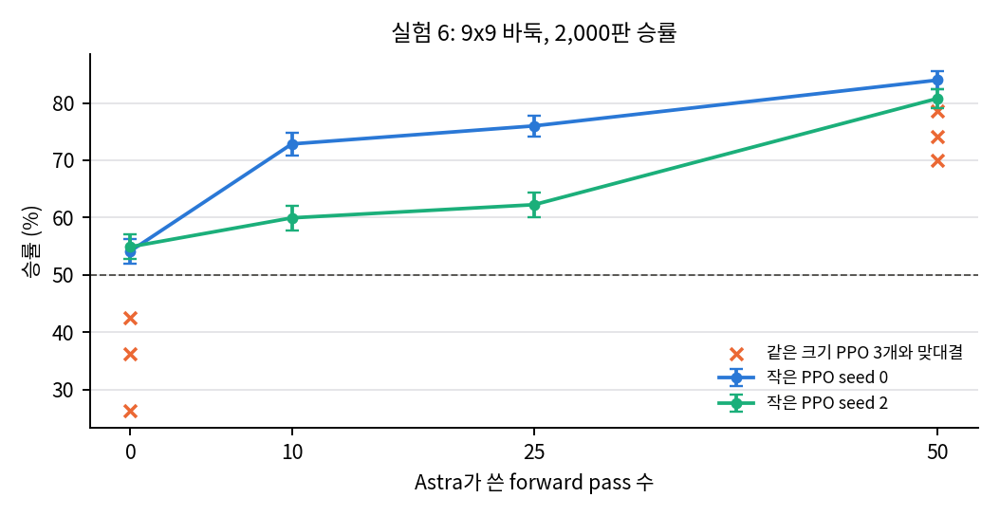

그림: 실험 8, 벤치마크별 편집 효과(문제 단위 짝 비교, 95% 부트스트랩 구간). 공개 로그로 직접 계산(`03` §6).
paper/blog.html, 2026-11-03 받음)과 그것을 Chrome으로 인쇄한 paper/paper.pdf(22쪽)를 원문으로 씁니다. 쪽 번호는 이 PDF 기준입니다.4d09ba6, logs_official/에 clone). 모델에 보낸 프롬프트, 응답, 실행한 코드, 평가 파일, 신경망이 모두 들어 있습니다. 라이선스는 로그·데이터·신경망 CC BY 4.0, 스크립트 MIT입니다.gpt-6-astra이고, Codex CLI(codex exec)로 호출했습니다(로그 README).범용 LLM(GPT-6 Astra)이 신경망 가중치를 직접 읽고 쓸 수 있다고 주장합니다. 저자들은 이것을 Weight-Space Programming이라고 부릅니다. 최적화기(경사하강)를 거치지 않고, 자연어 목표에 맞춰 LLM이 추론으로 가중치를 고친다는 뜻입니다(p.3).
블로그는 실험 여덟 개를 세 묶음으로 나눕니다(p.4).
| 묶음 | 실험 | 한 줄 결과(블로그 주장) |
|---|---|---|
| 읽기 | 1 게임 맞히기, 2 DDPM 모양 맞히기, 3 중간 블록만으로 언어·복사 헤드 맞히기, 7 아첨 모델 고르기 | 1–3은 모두 정답. 7은 가중치만으로는 실패, attention 패턴을 보여 주면 3쌍 모두 정답 |
| 고치기 | 4 Kinetix 자동차 정책 수정, 8 Qwen3.5-0.8B 수학 개선 | 4는 성공률 0% → 100%, 8은 MATH-500 7.9% → 48.1% |
| 처음부터 쓰기 | 5 MinAtar 정책 세 개, 6 9x9 바둑 정책(148만 가중치) | 5는 100M 스텝 PPO보다 높음, 6은 forward pass 50번이면 같은 크기 PPO를 이김 |
결론부(p.18–19)는 이를 근거로 평가 없는 감사(backdoor 탐지), 학습 비용 절감, 데이터 없는 능력 추가·삭제, 재귀적 자기 개선, 서로 다른 구조 사이의 회로 이식을 앞으로의 가능성으로 듭니다. 동료 심사를 거치지 않은 "초기 결과(very early results)"라고 스스로 밝힙니다(p.3).
codex exec 호출 한 번입니다. Codex의 기본 도구(셸, 파일 편집, 웹 검색, 이미지 보기, 하위 에이전트)는 모두 껐습니다. 턴마다 이벤트 스트림을 검사해 audit.tool_free로 기록했고, 공개된 1,125개 턴이 모두 도구를 쓰지 않았다고 적혀 있습니다.high, 3·5·6·7이 xhigh, 8이 max입니다.| 실험 | 대상 신경망 | Astra가 받은 것 | 금지한 것 | 피드백 |
|---|---|---|---|---|
| 1 | MLP 500-32-32-5 tanh(17,253개), PPO 10억 스텝, 자체 10x10 격자 게임 4종 | 가중치 전부(소수 3자리 텍스트), 입력 채널·행동 설명(게임 이름 없음) | 도구 전부. 보기 목록도 주지 않음(열린 질문) | 없음, 1회 답 |
| 2 | DDPM MLP 160-64-64-144 ReLU(23,824개), 원·사각형·삼각형 각 1개 | 가중치 전부(텍스트), 노이즈 스케줄 | 도구, 머릿속 forward 계산 | 없음, 1회 답 |
| 3 | 문자 단위 Transformer 4층 x 6헤드, 폭 384(716만 개). 입력층·출력층 제거 | 네 블록 가중치(Python으로 읽음), 후보 텍스트 3종 | 네트워크나 어떤 층도 입력에 돌리기, 검색 | 자기 코드 실행 결과(최대 100회, 실제 6–11회) |
| 4 | Kinetix 공식 actor 679-128x6-16(171,664개), PPO 10억 스텝, 차가 경사로에서 멈춤(0/256) | 가중치 전부(정수 x 스케일), 장면 설명, 실패 에피소드 1개 기록 | 도구, 두 번째 시도 | 없음, 1회 답 |
| 5 | MinAtar 정책 600-32-32-6 tanh(20,486개), 모두 0에서 시작 | 게임 규칙과 MinAtar 소스 파일 원문, 입출력 배치, 채점 방법 | 학습·데이터·도구, 환경 실행 | 없음, 1회 답 |
| 6 | 9x9 바둑 정책 243-512x6-82 ReLU(1,480,274개), 0에서 시작 | 규칙, Python sandbox(가중치 load/save), forward pass 예산 0·10·25·50 | 데이터 적합(경사·회귀·최소제곱), 탐색(트리·롤아웃), pass 밖에서 네트워크 실행 | pass마다 연습 상대와 최대 128판 또는 256개 국면 출력 |
| 7 | Gemma 3 270M 미세조정 쌍 3개(정직/아첨), 임베딩 고정 | 두 모델의 가중치·토크나이저, Python. 완화 조건에서는 attention 패턴 도구(직접 쓴 텍스트 16개까지) | 모델 출력 보기, 직접 실행 | 가중치만: 없음. 완화: attention 가중치만 |
| 8 | Qwen3.5-0.8B(thinking on) | 가중치를 담은 Python 커널(CPU), GSM8K·MATH 학습 집합 연습 문제, forward pass 10·25·50번 | 경사하강·학습, 커널 안에서 모델 실행, 임베딩·출력층·최종 norm 편집, 텐서 전체 상수배 | pass마다 최대 512문제 생성(원본·편집 짝 비교 가능) 또는 1,024개 텍스트 teacher-forced 읽기 |
로그의 응답을 보면 Astra가 가중치를 다루는 방식은 실험마다 다릅니다.
exp4_fix_car/README.md).down_proj에서 그 방향을 가장 많이 쓰는 출력 열 64개씩에서 그 방향 성분을 뺍니다(블로그 p.16, exp8_math/runs/p50c/final_answer.md). 방향 하나를 빼서 행동을 지우는 방법은 Arditi et al.(2024, 블로그 참고문헌 14)의 refusal direction과 같은 계열입니다.수치는 모두 공개 로그에서 다시 계산해 맞는 것을 확인했습니다(04_claim_verification.md, verify_logs.py).
| 실험 | 결과 | 확인한 것 |
|---|---|---|
| 1 | 4/4 정답, 확신도 99/96/96/97% | 정답 수, 파라미터 수 17,253 일치. Freeway는 "Frogger"로 답했고 채점기가 같은 게임으로 인정 |
| 2 | 3/3 정답, 확신도 84/77/88% | 모두 테두리만 있는 모양으로 그렸지만, 실제 모델은 속이 찬 모양을 생성 |
| 3 | 6/6 대화에서 언어 정답, 복사 헤드(induct > 0.2) 정확히 맞힘 | 정답 확률은 0.48–0.62. 보기 3개가 주어진 문제라 균등 추측의 log loss는 1.10, Astra는 0.60 |
| 7 | 가중치만: 4번 모두 판단 못 함. attention 패턴 허용: 3/3 | 세 쌍 모두 맞힐 우연 확률 1/8 |
실험 3이 읽기 실험 중 가장 강한 증거입니다. 입력·출력층이 없어 어느 차원이 어느 글자인지 모르는 상태에서, 실행 없이 복사 헤드 다섯 개(세 모델 합)를 하나도 틀리지 않고 찾았습니다(eval/heads.json: 복사 헤드는 induct 0.22–0.55, 나머지는 모두 0.019 이하). 다만 언어 판정은 "복사 헤드가 많으면 코드"라는 간접 추론이고, 확률도 0.5 근처에 머뭅니다.
실험 1과 2는 정답이 4/4, 3/3이지만, 정보가 얕은 층에 크게 드러나 있습니다. numpy 몇 줄로 첫 층과 출력층을 접어 보면 Breakout 정책의 agent 채널 가중치 에너지 97.4%가 맨 아래 행(8행)에 몰려 있고, 출력층은 왼쪽·오른쪽 행동만 크게 구분합니다. Pong은 96.5%가 1열에 몰려 있고 위·아래 행동을 구분합니다. DDPM 출력층의 행을 12x12로 접으면 사각형은 가로·세로 변, 삼각형은 빗변, 원은 호가 그대로 보입니다(03_analysis.md §1, 그림 exp1_agent_maps.png, exp2_output_units.png). Astra가 한 일은 이 구조를 텍스트 숫자 표만 보고 찾아내 게임·모양 이름과 연결한 것입니다. 쉬운 일은 아니지만, "가중치 공간을 이해한다"는 일반적인 주장의 근거로는 약합니다.
실험 7은 블로그가 실패를 그대로 보고한 점이 좋습니다. 완화 조건의 attention 도구는 모델을 실제로 실행해 activation(attention 가중치)을 보는 것이므로, 가중치 읽기가 아니라 activation 기반 해석입니다.
실험 4 (Kinetix 자동차): 51개 편집 문장으로 1,024/1,024 성공(테스트), 256/256 성공(프롬프트에 준 에피소드 흐름)입니다. 바뀐 칸은 171,664개 중 6,073개(3.54%)입니다. 하지만 바뀐 크기는 매우 큽니다. 전체 가중치 노름 대비 변화량(Frobenius)은 25.7배이고, 원래 |w|가 1 이하이던 층에 80, 200, 876 같은 값을 넣었습니다(그림 exp4_edit_size.png). 원래 정책을 조금 고친 것이 아니라, 몇 개 단위를 비우고 그 자리에 크게 증폭한 손 설계 제어기를 넣고, 특정 조건에서 꺼지게 한 것입니다. 단 하나의 장면(l/h2_car_ramp)에서 1회 시도이고, 장면이 바뀌면(시작 위치, 경사로 길이) 어떻게 되는지는 평가하지 않았습니다.
실험 8 (Qwen3.5-0.8B 수학):
| 모델 | MATH-500 | GSM8K | IFEval | MATH-500 토큰 상한 도달 |
|---|---|---|---|---|
| 원본 | 7.9 | 13.8 | 21.0 | 93.0 |
| 10 pass | 12.3 | 25.7 | 49.0 | 87.2 |
| 25 pass | 14.1 | 25.1 | 39.9 | 86.4 |
| 50 pass | 48.1 | 67.1 | 62.3 | 33.1 |
블로그 p.16 표와 같고, 로그의 merged.json과 문제별 파일로 다시 계산해도 같습니다. 50 pass 편집은 MATH-500 500문제 중 306문제를 개선하고 나빠진 문제는 0개입니다(문제별 4표본 평균 기준, 짝 부트스트랩 95% 구간 +36.9–+43.6%p).
해석에서 중요한 점이 세 가지 있습니다.
runs/p50c/final_answer.md). 블로그도 Gemma 3 270M 추가 실험에서 "가려진 능력을 꺼내는 것이지 없는 능력을 더하지는 않는다"고 인정합니다(p.17).requests/fwd_*.done.json). LLM이 제안하고 측정으로 고르는 영차(zeroth-order) 탐색에 가깝습니다. 실험 6도 같습니다.eval/RESULTS_excerpt.md)에는 블로그에 없는 실행이 더 있습니다: 프롬프트 v2의 0 pass, v3의 5 pass, v4의 10 pass는 편집을 제출하지 않았고, v4의 25 pass는 14.1 / 25.1로 v3 25 pass와 같은 값이었습니다. 블로그는 이를 숨기지 않고 로그로 공개했지만, 본문 표만 보면 "pass를 늘리면 좋아진다"로 읽히기 쉽습니다.실험 5 (MinAtar):
| 게임 | PPO 100M | PPO 500M | Astra 1회 |
|---|---|---|---|
| Breakout | 15.8 | 25.3 | 517.4 |
| Seaquest | 5.6 | 88.9 | 53.1 |
| Asterix | 25.8 | 55.2 | 53.2 |
블로그 표는 각 칸에서 최고 씨앗입니다. 씨앗 사이 편차가 큽니다. Seaquest 500M은 씨앗 3개가 7.5 / 4.4 / 88.9이고, Breakout 100M은 씨앗 10개의 중앙값이 6.6입니다(그림 exp5_seeds.png). Breakout에서 Astra 네트워크는 평균 7,417 스텝을 버텨 에피소드 상한(10,000 스텝)에 가깝습니다. 공을 계속 받아 내는 규칙이 하나 있으면 점수가 거의 상한까지 오르는 게임이라, 517.4 대 25.3이라는 차이는 "PPO보다 20배 낫다"보다 "작은 PPO가 공 추적 규칙을 못 배웠다"에 가깝습니다. Astra는 게임 소스 코드를 받았으므로, 이 실험은 알려진 규칙을 신경망 형태로 컴파일하는 능력을 보여 줍니다. 그 자체로 인상적이지만, 학습을 대체하는 최적화 능력과는 다릅니다.
실험 6 (9x9 바둑): pass 0개로 작은 PPO 두 개에 54.1%, 54.9%(2,000판, 95% 구간 하한 52% 이상)이고, pass 50개로 84.0%, 80.8%입니다. 같은 크기 PPO(학습률을 조정한 씨앗 3개)와의 맞대결은 pass 0개에서 42.6 / 26.3 / 36.3%로 지고, pass 50개에서 74.2 / 70.0 / 78.5%로 이깁니다(그림 exp6_budget.png). 비교 대상 PPO는 20,000번 반복(2,050만 판)만 학습했고 탐색이 없는 정책망입니다. 바둑 규칙 코드를 작성하는 것은 허용되었으므로, 최종 네트워크는 Astra가 Python으로 쓴 바둑 휴리스틱을 층별로 옮긴 것에 pass 피드백으로 손본 결과입니다. 학습률을 조정하지 않은 같은 크기 PPO(lr 3e-4)는 Astra 네트워크에 92–98% 진다는 수치도 로그에 있는데, 블로그는 조정한 쪽(lr 3e-5)을 기준으로 보고했습니다. 이것은 공정한 선택입니다.
블로그가 인정한 한계(p.18):
분석하며 추가로 본 한계:
gpt-6-astra의 다른 판이나 다른 회사 모델로 같은 결과가 나오는지는 확인할 수 없습니다. 로그는 완전하지만 같은 모델이 없으면 다시 실행할 수 없습니다.로그가 매우 투명하다는 점이 이 글의 가장 큰 장점입니다. 블로그의 수치는 모두 공개 파일로 정확히 다시 계산됩니다. 가장 설득력 있는 결과는 실험 3(실행 없이 복사 헤드를 정확히 찾음)과 실험 8(작은 방향 편집으로 반복을 크게 줄임)입니다. 반면 "LLM이 가중치 공간을 이해한다"는 일반 주장은 아직 근거가 부족합니다. 읽기 실험 1·2는 얕은 층에 드러난 구조였고, 쓰기 실험 5·6은 알려진 규칙을 신경망으로 옮긴 것이며, 실험 4·8은 손 설계 경로 추가와 방향 제거라는 기존 기법의 범주입니다. 이 블로그는 "기존 해석·편집 기법을 자연어 지시만으로 끝까지 수행하는 에이전트"의 증거로 읽는 것이 정확합니다. 그 수준만으로도 연구 도구로서 쓸모가 큽니다.
모든 수치는 공개 로그(logs_official/, CC BY 4.0)에서 CPU로 다시 계산했습니다. 스크립트는 verify_logs.py(→ verify_logs_results.json), weight_reading_toy.py(→ weight_reading_toy_results.json), plot_figures.py입니다.
블로그와 같은 조건(forward pass 없음)으로, LLM 없이 numpy 몇 줄로 첫 층과 출력층을 접어 보았습니다.

그림: 실험 1의 네 정책. 위는 첫 층 W1에서 agent 채널 가중치 제곱합을 10x10 칸으로 접은 것, 아래는 출력층 W3에서 행동별 평균을 뺀 열의 크기(최댓값으로 정규화). 직접 계산.
| 게임 | agent 에너지가 가장 몰린 행·열(안쪽 8x8 기준 비율) | 크게 구분하는 행동 | Astra 답 |
|---|---|---|---|
| Breakout | 8행(맨 아래) 97.4% | left 1.00, right 0.93 (나머지 0.40–0.43) | Breakout 99% |
| Pong | 1열(맨 왼쪽) 96.5% | down 1.00, up 0.90 (나머지 0.30–0.35) | Pong 96% |
| Pac-Man | 고르게 퍼짐(최대 행 17.1%, 최대 열 16.4%) | 네 방향 모두 0.89–1.00 | Pac-Man 96% |
| Freeway | 가운데 영역(최대 행 25.6%) | up 1.00, down 0.48 | Frogger 97% |
"패들이 맨 아래 행에서 좌우로 움직인다 → Breakout", "왼쪽 열에서 위아래로 움직인다 → Pong", "위로만 간다 → 길 건너기" 같은 추론은 이 표만으로 사람도 할 수 있습니다. Astra가 이 판단을 17,253개 숫자 텍스트만 보고, 도구 없이 해냈다는 점은 인상적입니다. 하지만 정보는 첫 층과 마지막 층에 거의 그대로 드러나 있습니다. 블로그도 실험 3 서두에서 "앞의 두 실험은 첫 층이나 마지막 층만 읽어도 풀 수 있었다"고 인정합니다(p.6).

그림: 실험 2의 세 DDPM. 출력 편향 b3와, 노름이 큰 은닉 단위 6개의 출력 가중치를 12x12로 접은 것. 사각형은 가로·세로 변, 삼각형은 빗변, 원은 호가 보인다. 직접 계산.
출력 편향만 봐도 삼각형은 위쪽 폭이 좁습니다(편향이 평균보다 큰 칸 수: 위 세 행 평균 2.67, 아래 세 행 평균 7.0). 원과 사각형은 편향만으로는 덜 구분되지만(위 4.0 대 아래 3.67, 위 5.0 대 아래 3.33), 출력 단위의 그림에서는 직선 변과 호가 뚜렷합니다. Astra가 테두리만 그린 이유도 이 그림으로 설명됩니다. 각 출력 단위가 테두리 조각을 그리고 속을 채우는 것은 편향(넓은 덩어리)이 맡는데, Astra는 단위들만 읽었습니다.
결론: 실험 1·2는 "가중치를 텍스트로만 받아도 얕은 구조를 찾는다"는 증거입니다. 깊은 계산을 이해한다는 증거는 실험 3에서 나와야 합니다.
| 항목 | 값 |
|---|---|
| 정답 언어에 준 확률(대화 6개) | 0.56, 0.52, 0.55, 0.62, 0.58, 0.48 (평균 0.55) |
| log loss | 0.60 (균등 추측 ln 3 = 1.10) |
| 복사 헤드, induct > 0.2 | Python 2.1, 3.1, 3.5 / romaji 3.3 / English 3.1 (다른 헤드는 모두 0.019 이하) |
| 복사 헤드, induct > 0.3(채점 스크립트 기본값) | Python 3.5 / romaji 없음 / English 3.1 |
언어 판정은 맞았지만 확신이 크지 않습니다. 보기 3개 중 정답에 평균 0.55를 줬습니다. 복사 헤드 쪽이 더 강한 결과입니다. 0.2 기준에서 다섯 헤드를 모두 맞혔고 다른 헤드는 하나도 복사 헤드로 부르지 않았습니다. 0.2와 0.3 사이에 헤드가 없고, 복사 헤드가 아닌 헤드는 모두 0.02 이하라서 기준을 어디에 두든 Astra의 지목은 "실제로 induction 점수가 높은 헤드"와 일치합니다. 로그 README가 0.3 기준 필드(true_copy_heads)와 블로그의 0.2 기준이 다르다는 점을 스스로 밝혀 둔 것도 확인했습니다.

그림: 텐서별 |w| 최댓값, 원래 PPO(회색)와 Astra 편집 후(주황). 로그 축. 직접 계산.
eval/oneshot_result.json과 일치).rel_change 25.66과 일치합니다.편집은 tanh 단위를 포화시켜 if-then 스위치로 쓰는 손 설계 제어기입니다. 출력층에 ±200을 넣으면 특정 조건에서 해당 행동의 확률이 1에 가까워집니다. 원래 정책은 그 조건이 꺼진 뒤에만 영향이 있습니다. 이 방식은 해석 가능하고 정확하지만, "기존 정책을 조금 고쳤다"보다 "조건부로 덮어쓰는 모듈을 붙였다"가 정확한 설명입니다.

그림: 게임별 PPO 씨앗 점수(회색 100M, 파랑 500M)와 Astra가 한 번에 쓴 네트워크(주황). Breakout은 로그 축. 직접 계산.
| 게임 | PPO 100M 최고 / 중앙값(씨앗 수) | PPO 500M 최고 / 중앙값(씨앗 3) | Astra | Astra 평균 에피소드 길이 |
|---|---|---|---|---|
| Breakout | 15.8 / 6.6 (10) | 25.3 / 19.8 | 517.4 ± 7.4 | 7,417 스텝(상한 10,000의 74%) |
| Seaquest | 5.6 / 4.4 (3) | 88.9 / 7.5 | 53.1 ± 1.4 | 1,412 |
| Asterix | 25.8 / 17.1 (10) | 55.2 / 46.9 | 53.2 ± 1.0 | 858 |

그림: forward pass 예산별 승률(2,000판, Wilson 95% 구간)과 같은 크기 PPO 세 씨앗과의 맞대결(x 표시). 직접 계산.
| 예산 | 작은 PPO seed 0 | 작은 PPO seed 2 | 같은 크기 PPO 3개 맞대결 |
|---|---|---|---|
| 0 | 54.1% [52.0, 56.3] | 54.9% [52.7, 57.1] | 42.6 / 26.3 / 36.3% |
| 10 | 72.9% [70.9, 74.8] | 60.0% [57.8, 62.1] | - |
| 25 | 76.0% [74.1, 77.8] | 62.3% [60.1, 64.4] | - |
| 50 | 84.0% [82.3, 85.5] | 80.8% [79.0, 82.5] | 74.2 / 70.0 / 78.5% |
그림: 벤치마크별 (편집 - 원본) 정확도 차이와 문제 단위 짝 부트스트랩 95% 구간. 직접 계산.
| 벤치마크 | 10 pass | 25 pass | 50 pass |
|---|---|---|---|
| MATH-500 | +4.5 [2.8, 6.2] | +6.2 [4.6, 7.9] | +40.2 [36.9, 43.6], 개선 306 / 악화 0 |
| GSM8K | +11.9 [9.9, 13.8] | +11.2 [9.5, 13.0] | +53.3 [51.0, 55.5], 개선 916 / 악화 4 |
| AMC23 | +0.6 [-0.2, 1.9] | +0.6 [-0.5, 2.3] | +23.0 [13.1, 33.9] |
| Minerva | +2.4 [1.1, 3.8] | +2.0 [0.6, 3.5] | +23.9 [19.6, 28.2] |
| OlympiadBench | +1.0 [0.4, 1.7] | +2.6 [1.7, 3.5] | +20.5 [18.0, 23.0] |
| IFEval | +28.0 [24.3, 31.7] | +19.0 [15.8, 22.2] | +41.3 [37.3, 45.2] |
| GPQA Diamond | +6.7 [2.5, 11.0] | +7.3 [3.2, 11.4] | +13.9 [9.2, 18.4] |
| MMLU-Pro 1k | -0.3 [-3.2, 2.5] | +4.4 [1.5, 7.4] | +5.2 [2.3, 8.2] |
(%p, 괄호는 95% 구간. MMLU-Pro는 1표본이라 구간이 넓습니다.)
50 pass 편집의 효과는 통계적으로 매우 분명합니다. MATH-500에서 나빠진 문제가 하나도 없다는 점이 특히 눈에 띕니다. 반복을 줄이는 편집이 "끝까지 가지 못하던 풀이를 끝까지 가게 할 뿐, 원래 맞히던 풀이를 망가뜨리지 않는다"는 해석과 맞습니다.
runs/p50c/final_answer.md).원본의 7.9%는 thinking on, 32,768 토큰, presence penalty 1.5라는 특정 설정에서의 값이고, 이 설정에서 모델이 반복에 빠진다는 것은 Qwen 모델 카드도 경고합니다(블로그 p.16). 따라서 이 결과는 "수학 능력 향상"보다 "알려진 실패 모드의 정밀한 제거"로 읽어야 합니다. 같은 문제를 푸는 더 단순한 방법들(반복 패널티 조정, thinking 끄기, 토큰 예산과 강제 종료, Arditi식 평균 차이 방향 제거를 스크립트로 수행)이 어디까지 따라오는지가 다음 비교 대상입니다. 로그에는 이 기준선이 없습니다.
공개된 결과표(eval/RESULTS_excerpt.md)에 있는 Qwen 편집 실행:
| 실행 | MATH-500 | 블로그 |
|---|---|---|
| v2, 0 pass | 7.9 (편집 없음) | 없음 |
| v3, 5 pass | 7.9 (편집 미제출) | 없음 |
| v3, 10 / 25 / 50 pass | 12.3 / 14.1 / 48.1 | 보고 |
| v4, 10 pass | 7.9 (편집 미제출) | 없음 |
| v4, 25 pass | 14.1 | 없음 |
| v5, 5–50 pass | 미완(…) | 없음 |
값이 있는 실행 중 큰 이득(48.1)은 하나뿐이고, 같은 예산의 다른 실행이 없어 재현성을 판단할 수 없습니다. 저자들은 이 표를 그대로 공개해서 판단할 근거를 남겼습니다.
| 실험 | 정보가 있는 곳 | 기존 기법으로 되는가 | LLM이 더한 것 |
|---|---|---|---|
| 1 | 첫 층·출력층 | 시각화로 보임(§1) | 텍스트에서 구조를 찾고 세계 지식(게임 이름)과 연결 |
| 2 | 출력층 | 시각화로 보임(§1) | 같음 |
| 3 | 층 사이 composition | Elhage식 점수 | 해당 분석을 스스로 고르고 수행, 언어 판정까지 추론 |
| 4 | 장면 설명 + 정책 | 손 설계 제어기 + 전환 | 실패 진단과 배선을 한 번에, 도구 없이 |
| 5 | 게임 소스 | 휴리스틱을 Tracr식으로 컴파일 | 휴리스틱 설계와 컴파일을 한 번에, 도구 없이 |
| 6 | 규칙 + 대국 피드백 | 휴리스틱 + 측정 기반 탐색 | 같은 일을 148만 가중치 규모에서 수행 |
| 7 | attention 패턴 | activation 비교 | 탐침 텍스트 설계 |
| 8 | activation + 측정 | 방향 제거, 디코딩 처방 | 실패 모드 발견, 위치 특정, 대조군 설계, 측정 기반 선택 |
공통점은 기존 해석·설계 기법의 선택과 실행을 자연어 지시만으로 끝까지 수행한다는 것입니다. 새 종류의 능력이라기보다 연구자가 하던 일련의 작업을 자동화한 것에 가깝고, 그 자체로 실용적 가치가 큽니다.
공식 "코드"는 하네스가 비공개라 코드 대조 대신 공개 로그의 평가 파일로 블로그 수치를 다시 계산했습니다(verify_logs.py → verify_logs_results.json). 판정은 "맞음"(파일과 정확히 일치), "맞음, 단서"(수치는 맞지만 해석에 조건이 필요), "근거 부족"으로 나눕니다.
| # | 블로그 주장 (쪽) | 다시 계산한 값 | 판정 |
|---|---|---|---|
| C1 | 네트워크 크기 17,253 / 23,824 / 171,664 / 1,480,274 (p.5–13) | 층 구조로 계산해 모두 일치(실험 5는 20,486) | 맞음 |
| C2 | 실험 1 네 게임 모두 정답, 실험 2 세 모양 모두 정답 (p.5–6) | scores.json 4/4, 3/3 |
맞음, 단서: 정보가 첫 층·출력층에 그대로 드러남(03 §1). Freeway는 "Frogger"로 답한 것을 정답 처리 |
| C3 | 실험 3 세 언어 모두 두 번씩 정답, 복사 헤드를 모두 찾고 다른 헤드는 지목하지 않음 (p.7) | 6/6, 복사 헤드 5/5(induct > 0.2), 오지목 0 | 맞음, 단서: 보기 3개 중 고르는 문제이고 정답 확률 평균 0.55 |
| C4 | 실험 4 한 번의 편집으로 1,024 에피소드 모두 성공, 가중치 3.5% 변경 (p.9) | 1,024/1,024, 6,073/171,664 = 3.54% | 맞음, 단서: 노름 기준 변화 25.7배, 한 장면에서만 평가(03 §3) |
| C5 | 실험 5 세 게임 모두 PPO 100M을 이김, 500M 대비 Breakout 20배·Asterix 근접·Seaquest 60% (p.10) | 517.4/25.3 = 20.4배, 53.2/55.2 = 96%, 53.1/88.9 = 60% | 맞음, 단서: 최고 씨앗과 비교. Breakout은 에피소드 상한 영향(03 §4) |
| C6 | 실험 6 pass 0개로 작은 PPO 둘에게 과반 승리, pass 50개로 같은 크기 PPO를 이김 (p.12) | 54.1%, 54.9% (95% 구간 하한 52.0%, 52.7%); 74.2 / 70.0 / 78.5% | 맞음 |
| C7 | 실험 7 가중치만으로는 4번 모두 실패, attention 도구로 3쌍 모두 정답 (p.14) | 3/3, 우연 확률 1/8 | 맞음, 단서: attention 도구는 모델 실행이라 가중치 읽기가 아님 |
| C8 | 실험 8 MATH-500 7.9 → 48.1, GSM8K 13.8 → 67.1, IFEval 21.0 → 62.3, 상한 도달 93 → 33% (p.16) | 문제별 파일로 다시 계산해 모두 일치. 짝 차이 +40.2%p [36.9, 43.6] | 맞음 |
| C9 | 실험 8 편집은 0.8B 가중치 중 131,072개(0.016%) (p.16) | 2 텐서 x 64 열 x 1,024 = 131,072, 0.0164%. bf16 반올림 뒤 실제로 달라진 값은 130,188개 | 맞음 |
| C10 | 실험 8 "without gradients" (p.1, p.15) | 경사·학습은 없음. 50 pass 실행은 원본·편집 짝 비교 측정을 반복하며 후보를 선택 | 맞음, 단서: 측정 피드백 기반 탐색. 블로그 p.1의 "without any environment feedback"은 실험 5에만 해당 |
| C11 | 실험 8 이득이 수학 밖(IFEval)으로 일반화 (p.16) | IFEval +41.3%p, GPQA +13.9%p, MMLU-Pro +5.2%p | 맞음, 단서: 반복 제거라 일반화가 자연스러움(IFEval은 </think> 뒤 답을 채점하므로 생각이 끝나야 점수가 남) |
| C12 | 편집이 소수 가중치만 건드려 catastrophic forgetting을 피할 수 있다 (p.19) | 실험 8에서 MMLU-Pro·GPQA가 떨어지지 않음. 실험 4는 노름 기준 큰 편집 | 근거 부족: 일반 주장으로는 실험 하나뿐 |
| C13 | LLM이 사람이나 기존 알고리즘의 기대를 훨씬 넘어선다 (p.1 TL;DR) | 단순 기준선(시각화, composition 점수, 방향 제거 스크립트, 디코딩 처방)과의 비교 없음(02 §2) |
근거 부족 |
| C14 | 각 결과의 재현성 | 예산·대상마다 실행 1개(실험 3은 2개). 실험 8에서 블로그에 없는 실행 4개(v2 0 pass, v3 5 pass, v4 10·25 pass) 중 편집을 낸 것은 1개(v4 25 pass, 14.1) | 판단 불가 |
| 항목 | 공개 여부 |
|---|---|
| 모델에 보낸 프롬프트와 응답 전체 | 공개(1,125턴, 도구 사용 감사 포함) |
| 실행한 코드와 출력 | 공개(tool_calls.jsonl) |
| 평가 파일(문제별 결과) | 공개. GPQA 문제 원문만 제외 |
| 읽거나 쓴 신경망 | 공개. 실험 7의 미세조정 모델(17 GB)은 학습 스크립트와 해시만 |
| 실험 8 편집 | 공개. 공개 Qwen 가중치에 대한 정확한 diff와 적용 스크립트(code/apply_edit.py) |
| 하네스 코드(프롬프트 서버, forward pass 서버) | 비공개. 규칙은 프롬프트에 적혀 있음 |
| PPO 기준선 체크포인트(실험 5) | 비공개. 결과만 |
사용한 LLM(gpt-6-astra) |
상용 API. 같은 판을 계속 쓸 수 있는지 알 수 없음 |
블로그 참고문헌 번호는 [n]으로 씁니다(paper/paper.pdf p.21–22). 블로그가 인용하지 않았지만 가까운 연구는 arXiv 번호를 함께 적습니다.
| 흐름 | 대표 연구 | 이 글과의 관계 |
|---|---|---|
| LLM으로 텍스트 산출물 최적화 | OPRO [1], DSPy [2], MIPRO [3], GEPA [4], Meta-Harness [5], autoresearch [6] | 저자 중 Khattab이 DSPy·GEPA 계열의 저자입니다. "프롬프트·프로그램을 LLM이 고치듯 가중치도 LLM이 고친다"는 확장이 글의 동기입니다(p.3) |
| 가중치를 사람이 정한 프로그램에서 만들기 | RASP(Weiss et al., 2021), Tracr(Lindner et al., 2023, arXiv:2301.05062, 블로그 p.3 링크), AdderBoard [28] | 실험 5·6은 "원하는 프로그램을 먼저 설계하고 층별로 옮기는" 방식이라 이 흐름에 가장 가깝습니다. 차이는 컴파일러 대신 LLM이 설계와 변환을 둘 다 한다는 점입니다 |
| 다른 네트워크가 가중치를 쓰기 | fast weight programmer(Schlag et al., 2021, arXiv:2102.11174, 블로그 p.3 링크), hypernetwork(Ha et al., 2016, arXiv:1609.09106), p-diff [22], HyperTuning [23], NeuroGen [24] | 이들은 가중치를 쓰는 모델을 그 일에 맞게 학습합니다. 이 글은 학습하지 않은 범용 LLM을 그대로 씁니다 |
이 글의 각 실험에는 LLM 없이도 같은 일을 하는 기존 기법이 있습니다. 블로그는 이들과 직접 비교하지 않았습니다. 이 비교가 "LLM이 무엇을 더하는가"를 가르는 기준입니다.
| 실험 | 기존 기법 | 어떻게 대응되는가 |
|---|---|---|
| 1·2 (얕은 층 읽기) | 첫 층·마지막 층 가중치 시각화(feature visualization 이전의 고전적 방법) | numpy로 접으면 같은 구조가 보입니다(03 §1). LLM은 텍스트 숫자만 보고 이 구조를 찾아 이름과 연결합니다 |
| 3 (복사 헤드) | Elhage et al. [10]의 QK·OV composition 점수, Olsson et al.(2022, arXiv:2209.11895)의 induction head | 블로그도 Astra가 이 방법을 스스로 다시 찾아냈다고 씁니다(p.8). 같은 계산을 스크립트로 돌리면 사람이 해석할 필요 없이 같은 헤드가 나옵니다 |
| 7 (아첨 탐지) | 두 모델의 activation·attention 비교, 자동 해석 에이전트 MAIA(Shaham et al., 2024, arXiv:2404.14394) | 가중치만으로 실패하고 attention 도구로 성공했으므로, 결과는 activation 기반 해석에 속합니다 |
| 4 (정책 수정) | 손 설계 제어기와 학습 정책의 결합(잔차·전환 제어), 보상 shaping 후 재학습 | 편집은 별도 경로를 배선해 특정 구간만 덮어쓰는 방식입니다(01 §2.3) |
| 8 (반복 제거) | 방향 하나를 지우는 Arditi et al. [14], activation steering(ITI, Li et al., 2023, arXiv:2306.03341), Representation Engineering(Zou et al., 2023, arXiv:2310.01405), 반복 원인 분석 [13] | Astra가 쓴 방법(반복·정상 문맥 비교로 방향 → down_proj 일부 열에서 제거)이 이 계열 그대로입니다. 디코딩 쪽 처방(반복 패널티, 토큰 예산)과의 비교도 없습니다 |
| 5·6 (처음부터 쓰기) | 사람이 쓴 휴리스틱을 Tracr식으로 컴파일, 행동 복제(휴리스틱 → 데이터 → 지도학습) | 실험 6은 데이터 적합을 금지했으므로, 휴리스틱을 손으로 층에 옮기는 것만 허용됩니다 |
경사 없는 최적화 쪽 기준선도 있습니다: SPSA [25], ES [26], MeZO [27]. 실험 6·8의 pass 예산(최대 50번 측정)은 이들이 보통 쓰는 평가 횟수보다 훨씬 적습니다. 그래서 "같은 측정 예산에서 무작위 섭동 탐색보다 LLM 제안이 낫다"는 비교가 있으면 설득력이 커집니다. 실험 8에서 Astra는 자기 검증에 노름을 맞춘 무작위 방향 대조군을 넣었다고 적었습니다(runs/p50c/final_answer.md). 이 대조군은 연습 문제 기준이고 블로그 본문에는 나오지 않습니다.
| 연구 | 무엇을 하는가 | 이 글과의 차이 |
|---|---|---|
| Circuits [15], Elhage et al. [10] | 사람이 도구로 회로를 추적 | 이 글은 같은 분석을 LLM이 자연어 지시로 수행 |
| ROME [16], MEMIT(Meng et al., 2023, arXiv:2210.07229) | 사실 연관을 특정 MLP에서 찾아 rank-1로 편집 | 실험 8의 10 pass 편집(30개 행렬에서 rank-1 제거)과 형태가 비슷 |
| Bills et al. [19] | LLM이 뉴런 하나의 activation 예시를 보고 설명 | activation을 본다는 점이 다름. 이 글의 실험 1–3은 가중치만 봄 |
| Natural Language Autoencoders [17], Weight Oracles [18] | activation이나 가중치를 읽도록 학습된 모델 | 이 글은 학습 없이 범용 모델을 그대로 씀. Weight Oracles(arXiv:2610.07334)가 가장 가까운 비교 대상인데, 같은 과제로 비교하지 않았음 |
| WorkspaceBench [21] | 해석 방법을 비교하는 벤치마크 | 저자들이 만들겠다는 "Weight-Space Programming 벤치마크"(p.19)와 목적이 겹침 |
gpt6_astra_tactile: 같은 GPT-6 Astra를 고정된 촉각 정책으로 쓴 논문입니다. 거기서는 LLM이 행동을 직접 출력하고, 여기서는 LLM이 행동을 내는 신경망의 가중치를 씁니다. 그 분석에서 지적한 결정당 지연(약 30초) 문제를, 가중치를 한 번 써 두고 작은 네트워크로 실시간 실행하는 방식이 피해 갈 수 있습니다. 실험 4·5가 바로 그 형태입니다.dust: 역전파 없이 forward만으로 Transformer를 사전학습하는 영차 방법입니다. 실험 8의 "gradient 없음, 측정은 있음" 구조와 같은 축에 있습니다. Dust는 무작위 섭동을 수많이 평가하고, 여기서는 LLM이 소수의 구조적 후보를 제안해 50번 안에 고릅니다. 두 글을 겹쳐 보면, 측정 예산 대비 효율을 비교하는 실험을 설계할 수 있습니다.dexscrew, flashdexretarget 등): 실험 4처럼 PPO 정책이 국소 최적(경사로 앞에서 멈춤)에 빠지는 문제는 이 저장소의 RL 기반 손 조작 논문에서도 반복됩니다. 재학습 대신 정책 가중치를 진단·편집하는 접근은 이들에 바로 옮겨 볼 수 있습니다.| 저장소 | 무엇인가 | 라이선스 | 확인 |
|---|---|---|---|
| RikiyaT/lm_understand-logs | 실험 1–8의 전체 로그, 평가, 신경망(실험 7 미세조정 모델 17 GB는 제외) | 로그·데이터·신경망 CC BY 4.0, 스크립트 MIT, 실험 5 프롬프트 속 MinAtar 소스 GPL-3.0 | 커밋 4d09ba6, logs_official/에 clone(367 MB) |
| kenjyoung/MinAtar | 실험 5의 게임 | GPL-3.0 | 메타데이터만 |
| FLAIROx/Kinetix | 실험 4의 환경과 공식 PPO | MIT | 메타데이터만 |
| google-deepmind/tracr | 프로그램 → Transformer 가중치 컴파일러(비교용) | Apache-2.0 | 메타데이터만 |
| andyrdt/refusal_direction | Arditi et al.의 방향 제거 구현(실험 8 기준선 후보) | Apache-2.0 | 메타데이터만 |
공식 하네스 코드(프롬프트 서버, forward pass 서버)는 공개되지 않았습니다. 로그 README의 "Not included"에 적혀 있습니다. 공개된 스크립트는 평가·채점·편집 적용(exp8_math/code/), 실험 7 학습·평가(exp7_sycophancy/code/), sandbox(harness/sandbox.py)입니다.